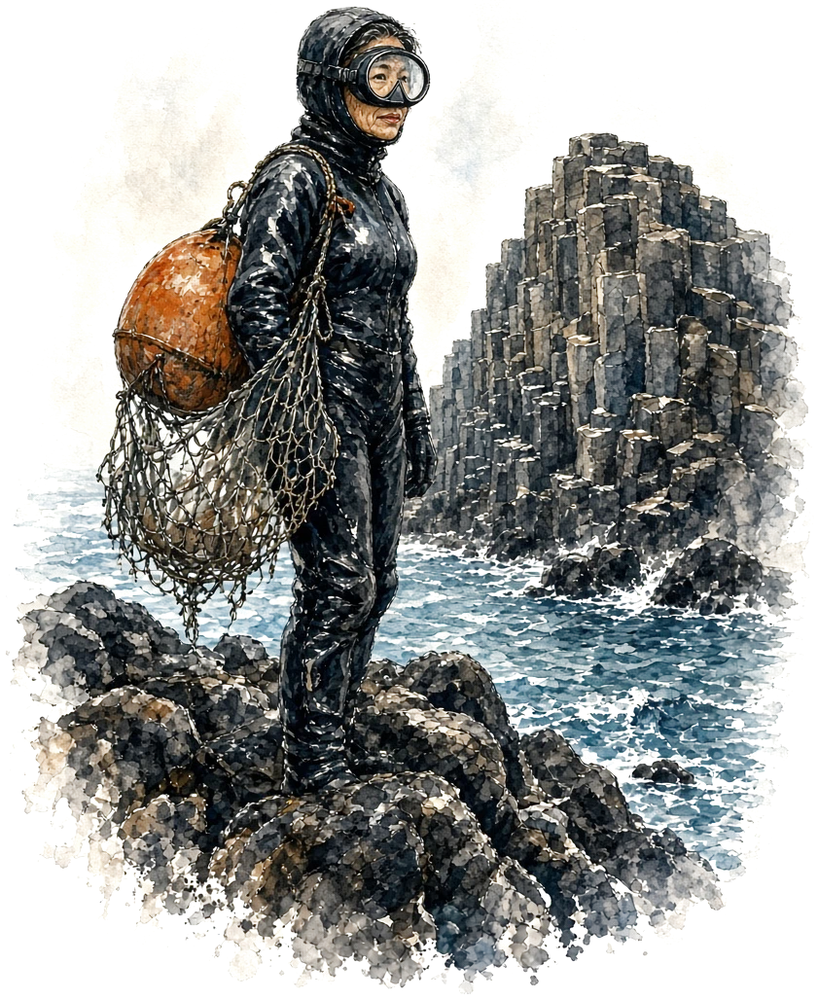

TRAVEL JOURNAL2026
— 26 —


the green path

NOTE — THE ISLAND
Volcanic island, gentle people, and a tangerine in every pocket.

— 27 —


YES




KOREA₩ 430


· black stone, white surf
· green paths by the sea
· a wall that said YES
· green paths by the sea
· a wall that said YES
FIG. 07 — SEONGSAN · HALLASAN